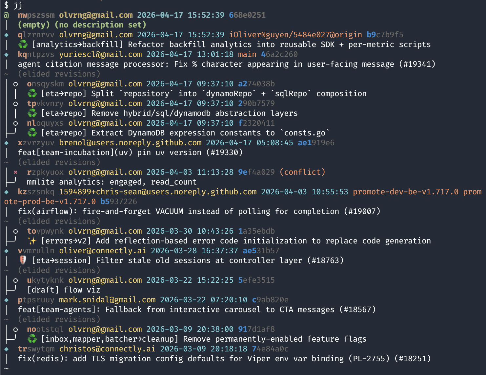
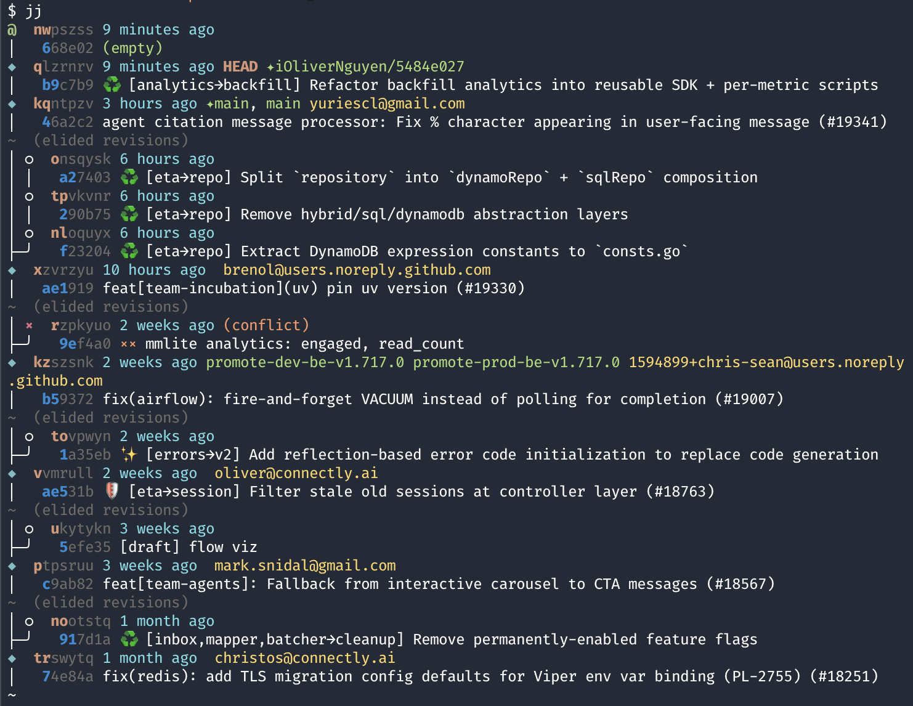
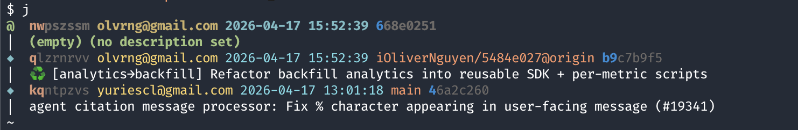
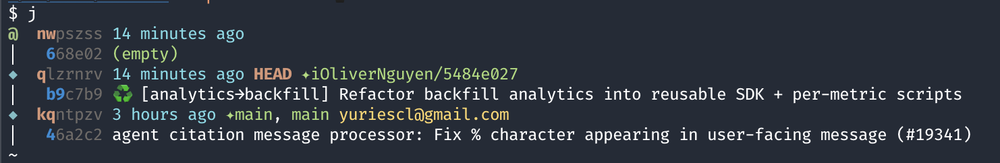

Working with Stacked PRs using jj
A while back I wrote about working with stacked PRs using git-branchless, git-autofixup, and git-pr. It worked well. But since then I switched to jj — and I’m not going back.
jj is a new version control system that is compatible with git. It can use an existing git repo as its backend. I started using it as a drop-in replacement for git and expected it to feel roughly equivalent. Instead, it made the stacked PRs workflow feel so natural that I wonder how I ever worked without it.
This article explains why, shows my full setup, and documents the workflow I use every day at Connectly.
What Are Stacked PRs?
If you haven’t read the previous article, here’s the short version.
A stacked PR workflow means splitting a feature into a chain of small, dependent pull requests — each one building on the previous — instead of one giant PR that touches everything. The stack for a “user sign-up” feature might look like this:
main ← [1: update cache pkg] ← [2: add email pkg] ← [3: implement sign-up]
Each PR is small and focused. Reviewers can read them in order and give targeted feedback. You don’t have to wait for PR 1 to merge before starting on PR 3 — you just stack it on top. When PR 1 is approved and merged, PR 2 becomes the new base, and so on.
The downside is that rebasing a chain of commits is painful in stock git. Edit one commit in the middle and you have to manually rebase everything above it. That friction is why most teams default to the big-bang PR.
jj eliminates that friction almost entirely.
Why jj Is a Perfect Fit for Stacked PRs
The working copy is always a commit
In git, your working directory has three states: the working tree, the index (staging area), and commits. You git add files to the index, then git commit to turn them into a commit.
In jj, there is no index. Your working directory is automatically a commit — always. As you edit files, jj continuously amends the current “working copy” commit. When you’re ready to start a new commit, you run jj new to create one. It’s a simpler mental model: you’re always editing a commit.
This matters for stacked PRs because you can freely jump between commits (jj edit) without stashing or worrying about your current state. jj just moves your working copy to the target commit.
Change IDs are stable
jj assigns every commit two identifiers:
- Commit ID — like git’s SHA. Changes every time you amend the commit.
- Change ID — stable. Stays the same even after rebases and amends.
This is a huge deal for stacked work. When you rebase a stack of ten commits onto a new main, every commit ID changes. But every change ID stays the same. You can refer to commits by change ID in scripts, in git-pr tracking headers, or in your own notes, and they remain valid through the whole lifecycle of the PR.
Auto-rebase on edit
This is the one that changes everything for stacked PRs.
In git (even with git-branchless), editing a commit in the middle of a stack means you need to explicitly rebase everything above it. The tooling helps, but it’s still a separate step.
In jj, when you jj edit a commit and make changes, all descendant commits are automatically rebased. You edit, the stack adjusts. That’s it.
Here’s what it looks like in practice:
je abc123 # jump to commit abc123 in the middle of the stack
# ... make your changes ...
j+ # move back up to the next commit — descendants already rebased
No --interactive, no --autosquash, no manual rebase invocation.
Conflicts don’t block you
When rebasing a stack in git, a conflict in commit 3 of 10 stops everything. You resolve it, continue, hope the next one is clean, repeat.
jj takes a different approach: it records conflicts inside commits and keeps going. A conflicted commit just shows (conflict) in the log. You can see the whole stack, keep working on other commits, and resolve the conflict when you’re ready — or skip it entirely if a later operation makes it disappear.
This is especially useful at Connectly, where CI bots occasionally add auto-generated commits to main. When I sync my stack, these can create transient conflicts in the middle. Most of the time I can just jdel the conflicted commit and the rest of the stack resolves cleanly — because the conflict was only in the CI-generated text, not in my actual code. More on this in the workflow section.
jj absorb — the killer feature
jj absorb is the built-in equivalent of git autofixup. It looks at what you’ve changed in your working copy, compares it to the blame history of the stack, and automatically squashes each hunk into the commit that last touched those lines.
You don’t have to think about which commit in the stack to fix up. You just make the change and run jab. jj figures it out.
# fix a bug that spans multiple commits in the stack
# ... edit files ...
jab # absorb into the right parent commits automatically
Colocated with git — no lock-in
jj operates as a layer on top of git. In “colocated” mode it uses your existing .git directory. You can run git log, git push, git pr — all the regular git tools still work. jj imports any git commits automatically.
This means there’s no big migration. You can start using jj in your existing repo today, keep using your existing tools, and adopt jj features gradually.
Trade-offs
To be fair:
- Learning curve. The mental model is different. “Working copy is a commit” and “change IDs vs commit IDs” take some getting used to.
--ignore-immutableeverywhere. Once a commit is pushed to a remote, jj marks it immutable. Editing it requires--ignore-immutable. I’ve aliased everything to include this flag by default.- git hooks don’t run. jj does not trigger git hooks. If your repo uses pre-commit hooks for linting, they won’t fire on
jjcommands. They still fire on directgitcommands. - Some colocated edge cases. Mixing jj and git commands heavily can create divergent change IDs. It’s not data loss, but it’s messy. I use
jcleanregularly to tidy up. - Newer tool. jj is under active development. Most things work great, but you’ll occasionally hit rough edges.
Setup with an Existing Git Repo
# Install (macOS)
brew install jj
# Initialize jj in an existing git repo (colocated mode)
cd ~/my-project
jj git init --colocate
# Verify
jj log
Colocated mode means jj and git share the same .git directory. Your git history, remotes, and branches all remain intact. jj calls branches “bookmarks” internally, but they map 1:1 to git branches.
Set up ~/.config/jj/config.toml at minimum:
[user]
name = "Your Name"
email = "you@example.com"
[ui]
default-command = "log" # just typing 'jj' shows the log
paginate = "never"
editor = "code" # or vim, nano, subl, etc.
For pushing stacked PRs with git-pr, nothing special is needed — it uses git under the hood and works fine in a colocated jj repo.
Core Concepts for git Users
A quick orientation before diving into the workflow:
| git | jj |
|---|---|
| branch | bookmark |
staging area / git add | not needed — working copy is a commit |
git commit -m "msg" | jj describe -m "msg" (working copy auto-committed) |
git commit --amend | just edit files — jj amends automatically |
git checkout <hash> | jj edit <change> |
git rebase -i HEAD~N | jj edit <ancestor>, then jj squash/jj split |
git stash | not needed |
git log | jj log |
git status | jj status |
The most important shift: in git you stage changes then commit them. In jj you just edit, and the current working copy commit is continuously updated. When you’re satisfied, you jj new to start the next commit, leaving the previous one sealed.
My Setup — Custom Log Template
The default jj log shows a lot of information, but it’s dense and hard to scan at a glance. Here’s the default:

And here’s the same repo with my custom template:

Much cleaner. The j alias (my focused stack view) with default template:

And with my template:

Each commit shows two lines:
<change_id> <time_ago> [HEAD] [(conflict)] [(divergent)] [✦remote-bookmark] [local-bookmark]
<commit_id> [(empty)] <description>
Line 1 uses the change ID — stable, used for jj commands. Line 2 uses the commit ID — git’s SHA, used for GitHub links and git tools. Having both at a glance means I never have to copy-paste between jj log and git log.
The full template (goes in ~/.config/jj/config.toml):
[templates]
log = '''
change_id.shortest(7) ++ " " ++
committer.timestamp().ago() ++ " " ++
if(self.contained_in("first_parent(@)"), label("git_head_label", "HEAD "), "") ++
if(conflict, label("conflict", "(conflict) "), "") ++
if(divergent, label("divergent", "(divergent) "), "") ++
separate(", ",
self.remote_bookmarks().filter(|r| r.remote() == "origin").map(|r| label("bookmark", "✦" ++ r.name())),
self.local_bookmarks().map(|r| label("bookmark", r.name())),
self.tags().map(|r| label("bookmark", r.name())),
) ++
if(author.email() == "you@example.com", "", " " ++ author.email()) ++
"\n " ++
commit_id.shortest(6) ++ " " ++
if(conflict, label("conflict", "×× "), "") ++
if(divergent, label("divergent", "﹖ "), "") ++
if(empty,
label("empty", "(empty) ") ++ description.first_line(),
if(description.first_line(),
description.first_line(),
label("empty description placeholder", "(no description)")
)
) ++
"\n"
'''
[colors]
git_head_label = { fg = "bright magenta", bold = true }
conflict = { fg = "magenta", bold = false }
divergent = { fg = "yellow", bold = false }
bookmark = { fg = "green" }
Replace "you@example.com" with your own email. Commits from others will show their author email; your own won’t clutter the display.
My Most Useful Aliases
I use short aliases for everything. Here’s what they do and why.
Viewing the stack
j (no args) — The most-used command. Calls jm(), which shows commits in the current stack relative to main. It filters to only what’s relevant: commits between main and the current head, plus main itself and the working copy:
j # show current stack vs main
j abc123 # pass-through to jj: j log -r abc123, j diff, etc.
js — jj status. Show what’s changed in the current working copy commit.
jss [change] — Show a commit summary: which files changed, insertions/deletions. Defaults to current (@). Also aliased as jjs.
Moving around
j- / j-- / j-N — Move to parent commit(s). j-3 goes up 3 commits in one shot.
j+ / j++ / j+N — Move to child commit(s). The clever part: if you’re at the top of the stack (no children), j+ automatically creates a new empty commit instead of failing. This means I can just keep pressing j+ to navigate forward and extend the stack when I reach the end.
jn [change] — Create a new empty commit after the given change (or current if omitted).
jn- — Insert a new empty commit before the current one. Anything above auto-rebases. Useful for retroactively splitting work.
je [change] — Edit a commit. Moves the working copy to that commit; all descendants auto-rebase.
Describing changes
jd — Open editor to write/edit the commit message for the current change.
jd -m "message" — Set message inline, no editor.
jnm / jnn — New empty change on top of main. This is how I start a new PR stack.
Syncing
jsync — Rebase the current stack onto local main, then clean up empty commits:
jsync # = jj sync && jj clean && j
jjsync — Same but fetches from remote first:
jjsync # = jj git fetch && jj sync && jj clean && j
The underlying jj sync alias is:
sync = ["rebase", "--ignore-immutable", "-s", "roots(main@origin..@)", "-d", "main@origin"]
This rebases everything from the root of my current stack up to @ onto main@origin. It only touches my current stack — not every branch in the repo.
Cleanup
jclean — Two steps: delete empty commits in the stack (jj clean), then remove any divergent copies created by mixing jj and git commands (jj-clean-divergent).
j del [change] / jdel [change] — Abandon a commit. Descendants automatically rebase onto its parent.
jsq [change] — Squash a commit into its parent, then clean up the resulting commit message (removes CI-generated lines and deduplicates Remote-Ref trailers).
Bookmarks (branches)
jb — jj bookmark. Manage bookmarks (jj’s name for git branches).
jbc [name] — Create a bookmark at the current commit.
jmove [change] [dest] — Rebase a change to a destination. Defaults: rebase current change to main:
jmove # rebase @ onto main
jmove abc123 # rebase abc123 onto main
jmove abc123 xyz456 # rebase abc123 onto xyz456
Files
jrs [file] — Restore files from a change. Like git checkout -- <file>.
jab — jj absorb. Automatically squash working copy changes into the right parent commits. My most-used cleanup command after editing across multiple commits.
Conflict resolution
j resolve / jresolve [change] — Open the merge editor for a conflicted commit. I use GoLand’s built-in merge tool, configured in ~/.config/jj/config.toml:
[ui]
merge-editor = ["/Applications/GoLand.app/Contents/MacOS/goland", "merge", "$left", "$right", "$base", "$output"]
My Workflow
Starting a new feature stack
jnm # new empty change on top of main
jd -m "feat: update cache package"
# ... write code ...
jn # new empty change (next in stack)
jd -m "feat: add email package"
# ... write code ...
jn
jd -m "feat: implement sign-up logic"
# ... write code ...
j # view the stack
Checking the current state
j # which commits are in my stack vs main
js # what files are changed in the current working copy
jss # summary of files changed + message for current commit
jss abc123 # same but for a specific commit
Editing a commit in the middle of the stack
This is where jj shines:
je abc123 # jump to abc123 — all descendants auto-rebase
# ... make changes ...
js # check what changed
j+ # move to the next commit (already rebased)
No --interactive, no --autosquash, no separate rebase step.
Making a fix across the stack
When a reviewer points out a bug that spans multiple commits, or I realize I need to touch code that lives in an earlier commit:
# edit the files in the working copy
jab # absorb: automatically routes each hunk to the right parent commit
j # verify the stack still looks right
Syncing with main
jjsync # git fetch + rebase stack onto main@origin + clean empties
j # verify the stack
The CI auto-commit problem
At Connectly, CI bots occasionally add auto-generated commits to main. When I sync, my stack rebases onto a main that includes these commits. Sometimes this creates a conflict marker in the middle of my stack — even though my actual code has no conflict.
The fix is usually:
j # find the (conflict) commit in the log
jdel rzpkyuo # abandon the conflicted commit
j # the stack is often clean now
jclean # clean up any remaining empties and divergent copies
This works because the conflict was only in the CI-generated text, not in my code. Abandoning that commit means jj rebases my real commits directly onto each other, and the conflict disappears.
If the conflict is real, I open the merge editor:
jresolve # resolve conflicts in current commit
jresolve abc123 # resolve in a specific commit
Pushing stacked PRs
Once the stack looks good:
je <top-of-stack> # check out the topmost commit in my stack
git pr # push all commits as stacked PRs on GitHub
git-pr uses a Remote-Ref: <branch> trailer in each commit message to track which GitHub branch corresponds to which commit. On subsequent runs it updates existing PRs rather than creating new ones.
After a review
je abc123 # jump to the commit the reviewer commented on
# ... make changes ...
jab # absorb if changes span multiple commits
git pr # update all PRs in the stack
Navigating quickly
j- # go to parent (older)
j+ # go to child (newer), or create new if at end of stack
j-3 # go up 3 commits
j+2 # go down 2 commits
Quick Comparison: jj vs git-branchless
I used git-branchless before jj. Here’s how they compare for stacked PR work:
| Feature | git-branchless | jj |
|---|---|---|
| Smart log | git sl | jj log / j |
| Edit middle commit | git checkout <hash> | jj edit <change> |
| Auto-rebase descendants | Yes (via git hooks) | Yes (built-in) |
| Change tracking | commit SHA only | stable change ID + commit SHA |
| Working copy | traditional git | always a commit |
| Conflict during rebase | stops and asks | marks commit, continues |
| Absorb changes | git autofixup (external tool) | jj absorb (built-in) |
| Undo | git undo | jj undo / jj op log |
| Git compatibility | full native git | colocated (mostly full) |
| git hooks | supported | not supported |
| Maturity | more established | newer, active development |
The biggest practical difference: git branchless sync syncs all branches in the repo. jsync/jjsync only syncs the current stack. There’s no direct equivalent in git-branchless for “rebase only my current stack.”
I switched because:
- Change IDs make tracking PRs through rebases much less fragile.
- Auto-rebase is faster and less error-prone when it’s built in, not hook-based.
- Not stopping on conflicts is a genuine quality-of-life improvement on a busy main branch.
jj absorbhandles more cases correctly thangit autofixup.
Appendix A: Q&A
Q: I accidentally made changes in the wrong commit. How do I undo?
jj undo — jj keeps a complete operation log. Every jj edit, jj rebase, jj describe is recorded. jj op log shows the full history. jj undo steps back one operation. You can also jj op restore <op-id> to jump to any point in the history.
Q: I have a conflict in the middle of my stack. Do I have to resolve it right now?
No. jj marks the commit as (conflict) and keeps going. You can:
- Keep working on commits above it.
jdelthe conflicted commit if it’s a CI auto-commit — often resolves the whole stack automatically.jresolvewhen you’re ready to fix it properly.
Q: How do I split a commit into two?
jj split -r <change> # opens interactive diff editor
Select which hunks go into the first commit. The rest become the second commit. Descendants auto-rebase.
Q: How do I view what changed in a specific commit?
jss <change> # summary: files changed, insertions/deletions
jj diff -r <change> # full diff
jj show <change> # diff + metadata
Q: What happens to my git branches?
jj calls them “bookmarks.” They map 1:1 to git branches and are fully visible to git tools. jj bookmark list shows all bookmarks. Remote bookmarks appear as ✦branch-name in the log template.
Q: Can I still use regular git commands?
Yes, in colocated mode. jj imports any git commits automatically on the next jj invocation. Avoid heavy mixing though — rapidly alternating between git commit and jj can create divergent change IDs. Use jclean to tidy up if that happens.
Q: Does .gitignore work?
Yes. jj respects .gitignore files.
Q: What about git hooks (pre-commit, commit-msg, etc.)?
git hooks do not run when using jj commands. They only fire on direct git commands. If your team uses pre-commit hooks for linting, they won’t run on jj operations. I use jfix as a workaround — it manually runs pre-commit on the files changed in the current stack.
Q: How do I move a commit to a different position in the stack?
jj rebase -r <change> -d <new-parent> # move one commit (descendants stay in place)
jj rebase -s <change> -d <new-parent> # move commit and all descendants
Or use jmove:
jmove # rebase current change onto main
jmove abc123 # rebase abc123 onto main
jmove abc123 xyz456 # rebase abc123 onto xyz456
Q: I pushed a commit and need to edit it. jj says it’s immutable.
Use --ignore-immutable. All my aliases already include this flag. For raw jj commands:
jj describe --ignore-immutable -r <change> -m "new message"
jj edit --ignore-immutable <change>
After editing a pushed commit you’ll need to force-push the corresponding branch. git pr handles this automatically.
Q: How do I delete a commit from the middle of the stack?
j del <change> # or: jdel <change>, or: jj abandon <change>
Descendants automatically rebase onto the abandoned commit’s parent.
Appendix B: jj ↔ git Cheatsheet
| git command | jj equivalent |
|---|---|
git init | jj git init --colocate |
git clone <url> | jj git clone <url> |
git status | jj status / js |
git log | jj log / j |
git add . && git commit -m "msg" | jj describe -m "msg" (working copy auto-committed) |
git commit --amend | just edit files — jj amends automatically |
git checkout <branch> | jj edit <change> |
git checkout -b <branch> | jj new then jj bookmark create <name> |
git stash | not needed |
git rebase -i HEAD~3 | jj edit <ancestor>, then squash/split as needed |
git rebase main | jj rebase -s @ -d main / jsync |
git push | jj git push / git push |
git fetch | jj git fetch / git fetch |
git merge <branch> | jj new <change1> <change2> (creates merge commit) |
git cherry-pick <hash> | jj duplicate -r <change> then jj rebase |
git reset HEAD~1 | jj squash or jj abandon |
git restore <file> | jj restore <file> / jrs <file> |
git diff | jj diff |
git blame <file> | jj file annotate <file> |
git bisect | not built-in yet |
git tag <name> | jj tag create <name> |
Appendix C: Full Alias Reference
zsh functions and aliases
# Main dispatcher: 'j' with no args shows stack, 'j <cmd>' passes through to jj
j() {
if [[ -z "$1" ]]; then
jm
else
jj "$@"
fi
}
# Show current stack relative to main
jm() {
if [[ -z "$1" ]]; then
jj log -r '(main..@)- | (main@origin..@)- | (@-):: & mine() | main | @'
else
jj log -r '(main..'"$1"')- | ('"$1"'..main)- | '"$1"' | (main..@)- | (main@origin..@)- | main | @'
fi
}
# Print commit message
jmsg() {
if [[ -z "$1" ]]; then
jj log -r @ -T 'description'
else
jj log -r "$1" -T 'description'
fi
}
# Show commit summary (files + line counts)
jshow() {
if [[ -z "$1" ]]; then
jj show @ --summary
else
jj show "$1" --summary
fi
}
# Sync: rebase current stack onto local main, clean up
jsync() { jj sync && jj clean && j }
# Sync: fetch first, then rebase current stack onto main@origin, clean up
jjsync() { jj git fetch && jj sync && jj clean && j }
# Rebase a change to main (or to a specified destination)
jmove() {
if [[ -z "$1" ]]; then
jj rebase -s @ -d "main" --ignore-immutable
elif [[ -z "$2" ]]; then
jj rebase -s "$1" -d "main" --ignore-immutable
else
jj rebase -s "$1" -d "$2" --ignore-immutable
fi
}
# Abandon a change
jdel() {
if [[ -z "$1" ]]; then
echo "Usage: jdel <rev>"
else
jj abandon -r "$1"
fi
}
# Run pre-commit linters on changed files in current stack
jfix() {
local root=$(jj workspace root 2>/dev/null)
if [[ -z "$root" ]]; then
echo "Not in a jj workspace"
return 1
fi
local rev="${1:-main..@}"
local files=$(jj diff -r "$rev" --name-only 2>/dev/null)
if [[ -z "$files" ]]; then
echo "No changed files in $rev"
return 0
fi
if [[ -f "$root/.pre-commit-config.yaml" ]]; then
(cd "$root" && echo "$files" | xargs pre-commit run --files)
elif [[ -x "$root/.husky/pre-commit" ]]; then
(cd "$root" && ./.husky/pre-commit)
else
echo "No pre-commit config found"
return 1
fi
}
# Open merge editor to resolve conflicts
jresolve() {
if [[ -n "$1" ]]; then
jj resolve -r "$1" --ignore-immutable
else
jj resolve -r "@" --ignore-immutable
fi
}
# Remove divergent commits (copies created by mixing jj and git commands)
jj-clean-divergent() {
echo "Finding divergent change IDs in current branch..."
local divergent_ids=$(jj log -r 'ancestors(@)' --no-graph | grep '(divergent)' | awk '{print $1}' | sort -u)
if [[ -z "$divergent_ids" ]]; then
echo "No divergent commits found"
return 0
fi
local count=$(echo "$divergent_ids" | wc -l | tr -d ' ')
echo "Found $count divergent change IDs"
local revsets=()
while IFS= read -r id; do
revsets+=("change_id($id) ~ ancestors(@)")
done <<< "$divergent_ids"
echo "Abandoning divergent commits (keeping current branch)..."
jj abandon "${revsets[@]}" --ignore-immutable
echo "Clean up complete."
}
# Clean commit message: remove [ci] auto-generated lines, deduplicate Remote-Ref trailers
jj-clean-msg() {
local rev="${1:-@}"
local msg=$(jj log -r "$rev" -T 'description' --no-graph)
local processed=$(node -e '
const msg = process.argv[1];
const lines = msg.split("\n");
let footerStart = lines.length;
for (let i = lines.length - 1; i >= 0; i--) {
if (/^[A-Za-z][A-Za-z0-9-]*:/.test(lines[i])) {
footerStart = i;
} else if (lines[i].trim() === "") {
continue;
} else {
break;
}
}
const bodyLines = lines.slice(0, footerStart).filter(line => {
const lower = line.toLowerCase();
return !(lower.includes("[ci]") && lower.includes("auto-generated"));
});
let remoteRefSeen = false;
const footerLines = lines.slice(footerStart).filter(line => {
if (line.trim() === "") return false;
const lower = line.toLowerCase();
if (lower.includes("[ci]") && lower.includes("auto-generated")) return false;
if (/^Remote-Ref:/.test(line)) {
if (remoteRefSeen) return false;
remoteRefSeen = true;
}
return true;
});
while (bodyLines.length > 0 && bodyLines[bodyLines.length - 1].trim() === "") {
bodyLines.pop();
}
if (footerLines.length > 0) {
console.log(bodyLines.join("\n") + "\n\n" + footerLines.join("\n"));
} else {
console.log(bodyLines.join("\n"));
}
' "$msg")
if [[ "$processed" != "$msg" ]]; then
jj describe --ignore-immutable -r "$rev" -m "$processed"
fi
}
# Squash into parent, then clean the resulting commit message
jsq() {
local rev="${1:-@}"
jj squash --ignore-immutable -r "$rev" || return $?
jj-clean-msg "$rev-"
}
# Navigate to next child commit; create new if at end of stack
jnext() {
if ! jj --ignore-immutable next 2> /dev/null; then
jj new
fi
}
# Short aliases
alias jab="jj absorb --ignore-immutable"
alias jb="jj bookmark"
alias jbc="jj bookmark create"
alias jclean='jj clean && jj-clean-divergent'
alias jd="jj describe --ignore-immutable"
alias je="jj edit --ignore-immutable"
alias jn="jj new --ignore-immutable"
alias jn+="jj new --ignore-immutable -A @"
alias jn-="jj new --ignore-immutable -B @"
alias jnn="jj new main"
alias jnm="jj new main"
alias jrb="jj rebase --ignore-immutable"
alias jrs="jj restore --ignore-immutable"
alias js="jj status"
alias jss="jshow"
alias jjs="jshow"
# Navigate forward (j+) — creates new if at end of stack
alias j+=" jnext "
alias j++=" jnext;jnext"
alias j+++=" jnext;jnext;jnext"
alias j++++="jnext;jnext;jnext;jnext"
alias j+2=" jnext;jnext"
alias j+3=" jnext;jnext;jnext"
alias j+4=" jnext;jnext;jnext;jnext"
alias j+5=" jnext;jnext;jnext;jnext;jnext"
alias j+6=" jnext;jnext;jnext;jnext;jnext;jnext"
# Navigate backward (j-) — go to parent commits
alias j-=" jj --ignore-immutable prev"
alias j--=" jj --ignore-immutable prev 2"
alias j---=" jj --ignore-immutable prev 3"
alias j----="jj --ignore-immutable prev 4"
alias j-2=" jj --ignore-immutable prev 2"
alias j-3=" jj --ignore-immutable prev 3"
alias j-4=" jj --ignore-immutable prev 4"
alias j-5=" jj --ignore-immutable prev 5"
alias j-6=" jj --ignore-immutable prev 6"
jj config aliases (~/.config/jj/config.toml)
[aliases]
'-' = ["prev"]
'+' = ["next"]
l = ["log", "-r", "(main..@)- | (main@origin..@)- | @"]
ll = ["log", "-r", "(main..@):: | (main..@)- | (main@origin..@)+"]
lr = ["log", "-r"]
ab = ["absorb"]
b = ["bookmark"]
cp = ["duplicate"]
d = ["describe", "--ignore-immutable"]
dd = ["duplicate"]
e = ["edit", "--ignore-immutable"]
g = ["git"]
gp = ["git", "push", "--allow-new"]
gf = ["git", "fetch"]
n = ["new", "--ignore-immutable"]
s = ["status"]
rb = ["rebase", "--ignore-immutable"]
rs = ["restore", "--ignore-immutable"]
sp = ["split", "--ignore-immutable"]
sq = ["squash", "--ignore-immutable"]
sync = ["rebase", "--ignore-immutable", "-s", "roots(main@origin..@)", "-d", "main@origin"]
del = ["abandon", "--ignore-immutable"]
pl = ["parallelize"]
px = ["parallelize"]
move = ["rebase", "--ignore-immutable", "-b", "$1", "-d", "$2"]
clean = ["del", "empty() & mine() ~merges() ~zzzzzz ~@"]
If you’re already using the git-branchless workflow from the previous article, switching to jj is low-risk: colocated mode means your existing git repo, remotes, and git-pr setup all keep working. The difference is you get better ergonomics on every stacked PR operation.
If you’re starting fresh with stacked PRs, jj is the place to start.
Let's stay connected!
Author
I'm Oliver Nguyen. A software maker working mostly in Go and JavaScript. I enjoy learning and seeing a better version of myself each day. Occasionally spin off new open source projects. Share knowledge and thoughts during my journey. Connect with me on , , , , or subscribe to my posts.